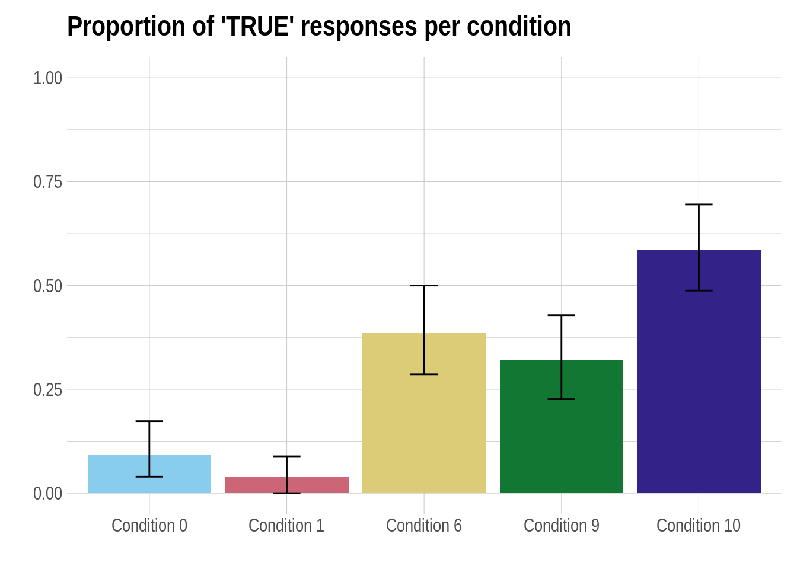
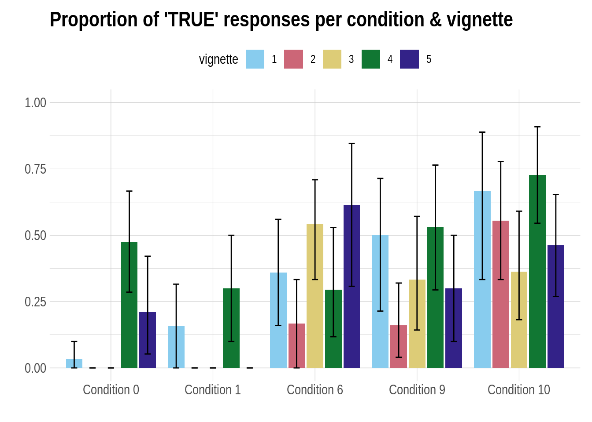

D.4 King of France
D.4.1 Nature, origin and rationale of the data
A presupposition of a sentence is a piece of information that is necessary for the sentence to make sense, but which is not communicated explicitly. If I say “Jones chained my camel to a tree”, this sentence pressupposes, somewhat incredibly, that I own a camel. If it is false that I own a camel, the sentence makes no sense. Yet, if I say it and you say: “I disagree” you take issue with my claim about chaining, not about me owning a camel. In this sense, the presupposition is not part of the explicitly contributed content (it is “not at issue content”, as the linguists would say).
We here partially replicate a previous study by Abrusán and Szendröi (2013) investigating how sentences with false presuppositions are perceived. The main question of interest for us is whether sentences with a false presupposition are rather regarded as true or rather as false. We therefore present participants with sentences (see below) and have them rate these as ‘true’ or ‘false’, a so-called truth-value judgement task, a common paradigm in experimental semantics and pragmatics. (The original study by Abrusán and Szendröi (2013) also included a third option ‘cannot tell’, which we do not use, since this data set is mainly used for toying around with binary choice data.)
Abrusán and Szendröi (2013) presented their participants with 11 different types of sentences, of which we here only focus on five. Here are examples of the five coniditions we test, using the corresponding condition numbers from the experiment by Abrusán and Szendröi (2013).
C0. The king of France is bald.
C1. France has a king, and he is bald.
C6. The King of France isn’t bald.
C9. The King of France, he did not call Emmanuel Macron last night.
C10. Emmanuel Macron, he did not call the King of France last night.
The presupposition in question is “France has a king”. C0 and C1 differ only with respect to whether this piece of information is pressupposed (C1) or explicitly asserted (C1). The variants C0 and C6 differ only with respect to negation in the main (asserted) proposition. Finally, the contrast pair C9 and C10 is interesting because of a particular topic-focus structure and the placement of negation. In C9 the topic is “the King of France” which introduces the presupposition in question. In C10 the topic is “Emmanuel Macron”, but it introduces the presupposition under a negation.
Figure D.1 shows the results reported by Abrusán and Szendröi (2013).

Figure D.1: Results of Abrusán and Szendröi (2013) .
D.4.1.1 The experiment
D.4.1.1.1 Participants
We obtained data from 97 particpants via the online crowd-sourcing platform Prolific.27 All participants were native speakers of English.
D.4.1.1.2 Material
The sentence material consisted of five vignettes. Here are the sentences that constitute “condition 1” of each of the five vignettes:
V1. The King of France is bald.
V2. The Emperor of Canada is fond of sushi.
V3. The Pope’s wife is a lawyer.
V4. The Belgian rainforest provides a habitat for many species.
V5. The volcanoes of Germany dominate the landscape.
As every vignette occurred in each of the five conditions, there are a total of 25 critical sentences. Additionally, for each vignette, there is a “background check” sentence which is intended to find out whether participants know whether the relevant presuppositions are true. The “background check” sentences are:
BC1. France has a king.
BC2. The Pope is currently not married.
BC3. Canada is a democracy.
BC4. Belgium has rainforests.
BC5. Germany has volcanoes.
Finally, there are also 110 filler sentences, which do not have a presupposition, but also require common world knowledge for a correct answer. As each filler has an uncontroversilly correct answer, these fillers also serve as a general attention check, to probe into whether participants are reading the sentences carefully enough. Example filler sentences are:
F1. William Shakespeare was a famous Italian painter in Rome.
F2. There were two world wars in the 20th century.
D.4.1.1.3 Procedure
Each experimental run started with five practice trials, which used the five additional sentences, which were like the filler material and the same for each participant, presented in random order.
The main part of the experiment presented each participant with five critical sentences, exactly one from each vignette and exactly one from each condition, allocated completely at random. Each participant also saw all of the five “background check” sentences. Each “background check” sentence was presented after the corresponding vignette’s critical sentence. All of these test trials were interspersed with 14 random filler sentences.
D.4.1.2 Theoretical motivation & hypotheses
We will be concerned with the following two research questions:28
- Is the overal rate (= aggregating over all vignettes & conditions) of “TRUE” judgements for sentences with presupposition failure different from pure guessing chance of 0.5?
- Is there a difference in (binary) truth-value judgements (aggregated over all vignettes) between C0 (with presupposition) and C1 (where the presupposition is part of the at-issue / asserted content)?
- Is there a difference in (binary) truth-value judgements (aggregated over all vignettes) between C0 (the positive sentence) and C6 (the negative sentence)?
- Is there a difference in (binary) truth-value judgements (aggregated over all vignettes) between C9 (where the presupposition is topical) and C10 (where the presupposition is not topical and occurs under negation)?
D.4.2 Loading and preprocessing the data
First, load and glimpse at the data:
## Observations: 2,813
## Variables: 16
## $ submission_id <dbl> 192, 192, 192, 192, 192, 192, 192, 192, 192, 192,…
## $ RT <dbl> 8110, 35557, 3647, 16037, 11816, 6024, 4986, 1301…
## $ age <dbl> 57, 57, 57, 57, 57, 57, 57, 57, 57, 57, 57, 57, 5…
## $ comments <chr> NA, NA, NA, NA, NA, NA, NA, NA, NA, NA, NA, NA, N…
## $ item_version <chr> "none", "none", "none", "none", "none", "none", "…
## $ correct_answer <lgl> FALSE, TRUE, FALSE, TRUE, TRUE, TRUE, FALSE, FALS…
## $ education <chr> "Graduated College", "Graduated College", "Gradua…
## $ gender <chr> "female", "female", "female", "female", "female",…
## $ languages <chr> "English", "English", "English", "English", "Engl…
## $ question <chr> "World War II was a global war that lasted from 1…
## $ response <lgl> FALSE, TRUE, FALSE, TRUE, TRUE, TRUE, FALSE, FALS…
## $ timeSpent <dbl> 39.48995, 39.48995, 39.48995, 39.48995, 39.48995,…
## $ trial_name <chr> "practice_trials", "practice_trials", "practice_t…
## $ trial_number <dbl> 1, 2, 3, 4, 5, 1, 2, 3, 4, 5, 6, 7, 8, 9, 10, 11,…
## $ trial_type <chr> "practice", "practice", "practice", "practice", "…
## $ vignette <chr> "undefined", "undefined", "undefined", "undefined…The most important variables in this data set are:
submission_id: unique identifier for each participanttrial_type: whether the trial was of the categoryfiller,main,practiceorspecial, where the latter encodes the “background checks”item_version: the current item’s vignette number (applies only to trials of typemainandspecial)response: the answer (“TRUE” or “FALSE”) on each trial
As the variable names used in the raw data are not ideal, we will pre-process the raw data a bit for easier analysis.
d_processed <- d_raw %>%
# discard practice trials
filter(trial_type != "practice") %>%
mutate(
# add a 'condition' variable
condition = case_when(
trial_type == "special" ~ "background check",
trial_type == "main" ~ str_c("Condition ", item_version),
TRUE ~ "filler"
) %>%
factor(
ordered = T,
levels = c(str_c("Condition ", c(0, 1, 6, 9, 10)), "background check", "filler")
)
)
# write_csv(d_processed, "data_sets/king-of-france_data_processed.csv")D.4.3 Cleaning the data
We clean the data in two consecutive steps:
- Remove all data from any participant who got more than 50% of the answer to filler material wrong.
- Remove individual main trials if the corresponding “background check” question was answered wrongly.
D.4.3.1 Cleaning by-participant
# look at error rates for filler sentences by subject
# mark every subject with < 0.5 proportion correct
subject_error_rate <- d_processed %>%
filter(trial_type == "filler") %>%
group_by(submission_id) %>%
summarise(
proportion_correct = mean(correct_answer == response),
outlier_subject = proportion_correct < 0.5
) %>%
arrange(proportion_correct)Plot the results:
# plot by-subject error rates
subject_error_rate %>%
ggplot(aes(x = proportion_correct, color = outlier_subject, shape = outlier_subject)) +
geom_jitter(aes(y = ""), width = 0.001) +
xlab("Poportion of correct answers") + ylab("") +
ggtitle("Distribution of proportion of correct answers on filler trials") +
xlim(0,1) +
scale_color_discrete(name = "Outlier") +
scale_shape_discrete(name = "Outlier")Apply the cleaning step:
D.4.3.2 Cleaning by-trial
# exclude every critical trial whose 'background' test question was answered wrongly
d_cleaned <-
d_cleaned %>%
# select only the 'background question' trials
filter(trial_type == "special") %>%
# is the background question answered correctly?
mutate(
background_correct = correct_answer == response
) %>%
# select only the relevant columns
select(submission_id, vignette, background_correct) %>%
# right join lines to original data set
right_join(d_cleaned, by = c("submission_id", "vignette")) %>%
# remove all special trials, as well as main trials with incorrect background check
filter(trial_type == "main" & background_correct == TRUE)
# write_csv(d_cleaned, "data_sets/king-of-france_data_cleaned.csv")D.4.4 Exploration: summary stats & plots
Plot for ratings by condition:
d_cleaned %>%
# drop unused factor levels
droplevels() %>%
# get means and 95% bootstrapped CIs for each condition
group_by(condition) %>%
nest() %>%
summarise(
CIs = map(data, function(d) bootstrapped_CI(d$response == "TRUE"))
) %>%
unnest(CIs) %>%
# plot means and CIs
ggplot(aes(x = condition, y = mean, fill = condition)) +
geom_bar(stat = "identity") +
geom_errorbar(aes(ymin = lower, ymax = upper, width = 0.2)) +
ylim(0,1) +
ylab("") + xlab("") + ggtitle("Proportion of 'TRUE' responses per condition") +
theme(legend.position = "none") +
scale_fill_manual(values = project_colors)
Plot for each condition & vignette:
d_processed %>%
filter(trial_type == "main") %>%
droplevels() %>%
group_by(condition, vignette) %>%
nest() %>%
summarise(
CIs = map(data, function(d) bootstrapped_CI(d$response == "TRUE"))
) %>%
unnest(CIs) %>%
ggplot(aes(x = condition, y = mean, fill = vignette)) +
geom_bar(stat = "identity", position = "dodge2") +
geom_errorbar(
aes(ymin = lower, ymax = upper),
width = 0.3,
position = position_dodge(width = 0.9)
) +
ylim(0,1) +
ylab("") + xlab("") + ggtitle("Proportion of 'TRUE' responses per condition & vignette")
D.4.5 Data analysis
References
Abrusán, Márta, and Kriszta Szendröi. 2013. “Experimenting with the King of France: Topics, Verifiability and Definite Descriptions.” Semantics & Pragmatics 6 (1): 1–43.